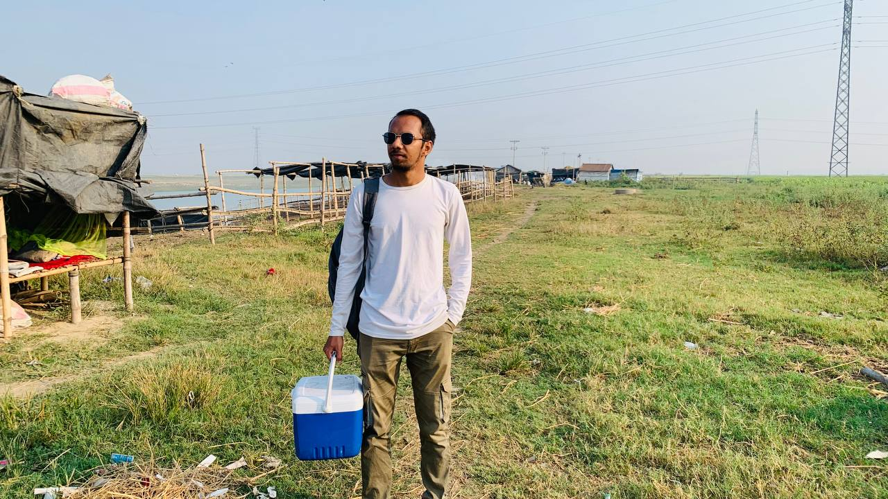
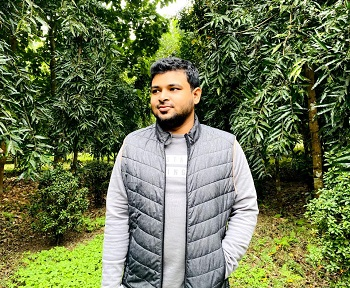
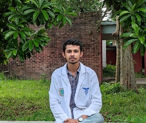
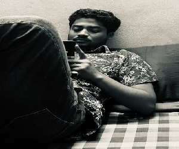

Welcome to the Penguin Family

Dr. Tareq Mahmud Uday
DVM, MS in MedicineDr. Tareq got his DVM degree from Bangladesh Agricultural Univarsity in 2026. He is doing his PhD in renewed university of US at this moment. He is much interested in small animals medicine.

Dr. Nowshad Jaman Nirob
DVM, MS in MedicineDr. Nowshad got his DVM degree from Bangladesh Agricultural Univarsity in 2026. He is doing his PhD in renewed university of US at this moment. He is much interested in small animals medicine.

Dr. Golam Mahfuz Kanon
DVM, MS in Medicine, BCS(Livestock)Dr. Kanon got his DVM degree from Bangladesh Agricultural Univarsity in 2026. He is currently working as a Livestock officer in Isshordi Upozilla of Mymensing. He is much interested in Large animals medicine.

Dr. Shadman Sakib Anjum
DVM, MS in Medicine, BCS(Livestock)Dr. Anjum got his DVM degree from Bangladesh Agricultural Univarsity in 2026. He is currently working as a Livestock officer in Shahzatpur Upozilla of Sirajganj. He is much interested in Large animals medicine.